Lecture 8: LLM Evaluation【講義スライド17枚付き】
「測れなければ、何を改善すべきか分からない」。自由形式の LLM 出力をどう評価し、エージェントの失敗をどう切り分け、公開ベンチマークをどう読めばよいかを、人手評価から LLM-as-a-Judge、MMLU・SWE-bench・τ-benchまで体系化した講義。
3行サマリ
- 自由形式の出力品質は単一の万能指標では測れない。人手評価は高品質だが主観・費用・速度に限界があり、参照文ベースの指標は言い換えに弱いため、実務では明確な基準を与えた LLM-as-a-Judgeが重要になる。
- LLM Judge には位置・冗長性・自己強化などのバイアスがある。明瞭なガイドライン、二値判定、理由先行、低温度、人手との相関確認を組み合わせ、代理指標への過剰最適化を避ける。
- エージェント評価は最終回答だけでなく、ツール選択・引数・実行結果・応答統合を段階別に診断する。公開ベンチマークは能力の輪郭を示すにすぎず、価格・安全性・実タスクとの Pareto 最適で選ぶべきである。
1. 評価とは何を測ることか
動画 00:00前回までに、RAG による外部知識の取得、bi-encoder での候補検索と cross-encoder での再ランキング、tool calling、ReAct の Observe → Plan → Act を扱った。Lecture 8 は、それらを含む LLM システムの性能をどう定量化するかに焦点を移す。
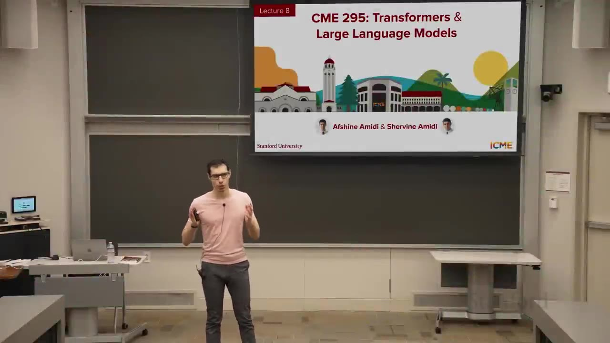
「LLM を評価する」には、出力の一貫性・事実性・有用性だけでなく、レイテンシ、価格、稼働率などのシステム指標も含み得る。本講義の主対象は出力品質、つまり「実際の応答がどれほど良いか」である。自然言語、コード、数学的推論など出力形式が多様なため、すべてに通用する単一指標を作るのは難しい。
この難しさに対する三つの代表的な方法は、必要な教師信号、評価できる範囲、運用コストが異なる。以降の流れを見通すため、まず各方法が何を解決し、どこで次の方法が必要になるかを整理する。
| 評価方法 | 必要なもの | 強み | 主な限界 |
|---|---|---|---|
| 人手評価 | 対象プロンプト、応答、採点基準、訓練された評価者 | 有用性や自然さなど、人間の選好を直接判断できる。後続手法を校正するground truthにもなる | 評価者間で判断が割れ、反復ごとの採点は遅く高価。大量の回帰評価には向かない |
| 参照文＋ルールベース | プロンプトごとの理想回答と、METEOR・BLEU・ROUGEなどの比較式 | 同じ参照文を再利用して高速・安価・再現可能に比較でき、モデル更新の回帰確認に使いやすい | 意味が同じ言い換えや文体差でも低得点になり、参照文のない新しい問いには適用できない |
| LLM-as-a-Judge | 元のプロンプト、モデル応答、明示した評価基準、Judgeモデル | 参照文なしでも自由形式の応答を評価でき、スコアに加えて判断理由を返せる | 位置・冗長性・自己強化などのbiasと確率性があり、人手との相関を継続確認する必要がある |
2. 人手評価と評価者間一致
動画 07:08理想は、各プロンプトに対する各応答を人が毎回採点することだ。しかし「誕生日プレゼントにテディベアを勧める応答は有用か」のような問いでは、評価者によって「十分具体的」「種類まで指定していないので不十分」と判断が割れる。そこで、評価ガイドラインの明確さを測る健康指標として評価者間一致を追跡する。
単純一致率だけでは不十分である。二人がランダムに Yes/No を半々で選んでも、一致率は 0.5² + 0.5² = 0.5、つまり50%になる。したがって、観測一致率を「偶然でも起こる一致」と比較する必要がある。
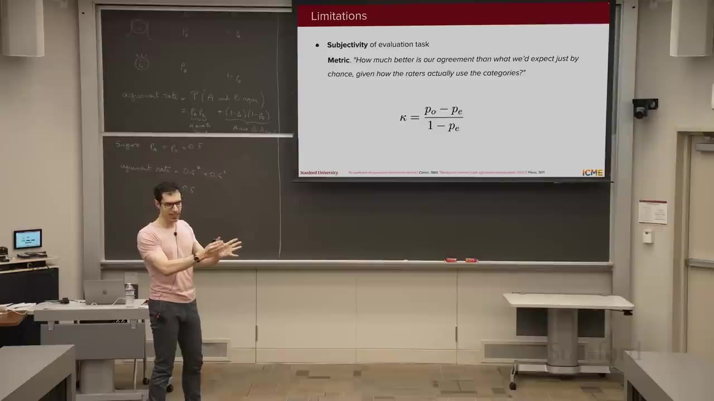
どの指標も、モデル応答そのものの正しさではなく、人間の評価者が同じ基準で採点できているかを確かめるために使う。違いは、評価者が2人か複数人か、未採点の項目があるかである。
| 指標 | 何を確かめるか | 典型的な使い方 | 読み方と注意点 |
|---|---|---|---|
| 単純一致率 | 評価者が同じ結論を出した項目が、全体の何割あるかを見る | 2人が100件の応答を「有用 / 有用でない」と判定し、80件で同じなら一致率80%とする。採点作業の状況を最初に把握しやすい | 高いほど判断は揃っている。ただし、全員がほとんど「有用」と答える場合は偶然でも一致しやすく、80%という数字だけでは基準の良さを判断できない |
| Cohen's κ | 2人の評価者が、偶然以上に同じ基準で判断できているかを見る | 1人目が厳しく、2人目が甘い場合でも、それぞれの回答傾向を考慮して一致を評価する。2人で作った正解labelや品質判定の信頼性確認に向く | 高いほど、単なる偶然ではなく2人の判断基準が揃っている。低ければ、評価例を見直し「どこからを有用とするか」をすり合わせる |
| Fleiss' κ | 3人以上の評価チーム全体で、判断が一貫しているかを見る | 各応答を5人が「合格 / 不合格」で判定するような、大人数のannotationや品質レビューで使う。特定の2人ではなくteam全体の揃い方を測る | 高ければ、誰が担当しても似た判定になる。低ければ、基準が曖昧な項目や、評価者ごとの解釈差が残っている可能性がある |
| Krippendorff's α | 複数人の評価で、未採点や担当人数の違いがあっても判断の一貫性を見たい場合に使う | ある応答は3人、別の応答は4人が評価し、一部のlabelが欠けているような実運用に向く。全項目を全員が採点できないdatasetでも扱いやすい | 高いほど、不完全な採点状況でも共通基準が機能している。柔軟な分、何を一致とみなすかやlabelの種類を先に決めて使う |
一致度が低ければ「評価者が悪い」と結論づけず、評価者同士の alignment session を開き、基準と例を揃える。こうして主観性は測定・改善できるが、人手評価の速度と費用は残るため、次は参照文を再利用する自動評価へ進む。
3. 参照文とルールベース指標
動画 18:24毎回の人手採点を避ける次の案は、プロンプトごとに人が一度だけ理想回答（reference）を作り、モデルを更新するたびに自動比較することだ。METEOR・BLEU・ROUGEはいずれも、回答が事実として正しいかを直接調べるのではなく、モデル出力の言葉や語順が参照文にどれだけ近いかを異なる観点で測る。
人が作った理想文"] --> C["モデル出力と比較"] G["モデル出力"] --> C C --> M["METEOR
単語を一対一で対応付ける"] C --> B["BLEU
モデル出力側の語句を数える"] C --> O["ROUGE
参照文側の語句を数える"] M --> M1["同じ語・語幹・同義語を対応
単語の過不足と語順のまとまりを見る"] B --> B1["連続する語句が参照文にもあるか
短すぎる出力は減点する"] O --> O1["参照文の重要な語句を
モデル出力がどれだけ拾ったかを見る"] M1 --> M2["翻訳の単語選びと語順が
参照文に近いか"] B1 --> B2["翻訳の表現が参照文に
どれだけ似ているか"] O1 --> O2["要約が参照文の内容を
どれだけ取りこぼさず含むか"]
METEOR：単語の対応と語順を評価する
何を評価するか：翻訳で、参照文とモデル出力の単語がどれだけ対応し、その対応が自然な順序で並んでいるかを見る。完全に同じ単語だけでなく、同じ語幹や一部の同義語も対応候補にするため、単純な文字列一致より柔軟である。対応する単語が文中で何か所にも分断されると、語順が不自然とみなして減点する。
BLEU：モデル出力の語句が参照文にも現れるかを評価する
何を評価するか：翻訳で、モデルが生成した1語・2語・3語といった連続する語句が、参照文にもどれだけ現れるかを見る。参照文に近い言い回しを再現すると高くなる。一方、短い出力は一致する語句だけを選びやすいため、必要以上に短い翻訳にはbrevity penaltyをかける。
ROUGE：参照要約の内容をどれだけ回収したかを評価する
何を評価するか：要約で、人が作った参照要約に含まれる語句を、モデル出力がどれだけ取りこぼさず含んでいるかを見る。BLEUが「モデルが書いた語句のうち何が参照文にもあるか」を重視するのに対し、ROUGEは「参照要約にある情報をどれだけ拾えたか」というcoverageを捉えるために使われる。
三つに共通する弱点は、意味が同じでも表現が異なると低得点になり得ることだ。「plush teddy bear」「soft stuffed bear」「gentle toy companion」は近い意味でも、共有する語句が少ない。つまり、これらは参照文への表現上の近さには強いが、意味の同等性、事実性、人間にとっての有用性を単独で保証しない。この限界が、次のLLM-as-a-Judgeを導入する理由になる。
4. LLM-as-a-Judge の基本設計
動画 28:00大規模事前学習と選好チューニングを経た LLM は、知識と人間の好みに関する信号を持つ。そこで、評価対象のプロンプト・応答・評価基準を別の LLM に渡し、理由（rationale）とスコアを返させる。ルール指標の数字だけでは分からなかった「なぜその点数なのか」を自然言語で説明できることが大きな違いである。
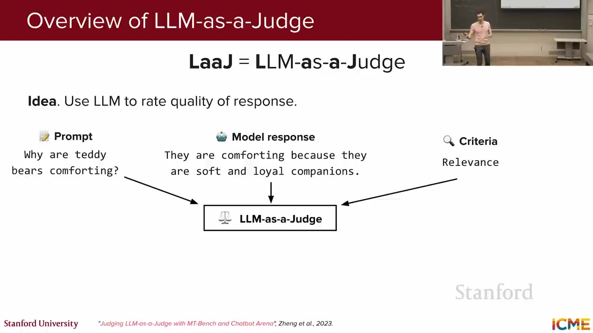
実務では、まず理由を出させ、その後にスコアを出させる。この順序は、モデルが判断材料を言語化してから結論を出すため、経験的に品質が上がる。通常の生成では JSON などの形式が保証されないので、guided / constrained decoding に基づくstructured outputを利用し、{ rationale, score } のようなスキーマを強制する。
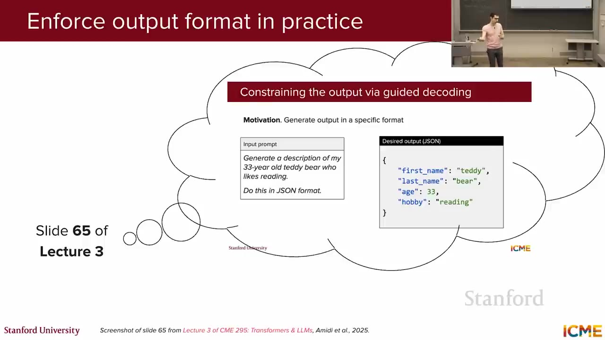
rationale と score を確実にparseするため、guided decodingでJSON schemaを強制する。画面はLecture 3のstructured output説明を再掲している。34:10Judgeへの問い方は、一つの応答が基準を満たすかを判定するPointwiseと、二つの応答のどちらがより基準を満たすかを選ぶPairwiseの二つに分かれる。前者は絶対評価、後者は相対評価であり、判定結果が意味する範囲も異なる。
| 判定方式 | Judgeに尋ねる問い | 判定結果が意味すること | 主な使い方 |
|---|---|---|---|
| Pointwise 一つずつ判定 |
「この応答は、指定した品質基準を満たしているか？」 元のprompt、一つのresponse、評価criteriaを渡す |
Passなら、その応答が設定した最低基準を満たす。Failなら、rationaleから不足した条件を特定できる | 本番投入前のquality gate、モデル更新後の回帰テスト、失敗理由の分類 |
| Pairwise 二つを比較 |
「同じpromptへのResponse AとBでは、どちらが評価基準をより満たしているか？」 | AまたはBの相対的な勝者が分かる。ただし、勝者が最低品質を満たすとは限らず、両方が悪い場合もある | モデルversion A/Bの比較、複数候補からの選択、選好labelの作成 |
Pointwiseは「基準を超えたか」を見るため、講義は境界が曖昧になりにくいPass / Failの二値判定を勧める。Pairwiseは差が小さい候補でも優劣を付けやすいが、提示順によるposition biasがあるため、A/Bを入れ替えて結果が変わらないか確認する。
合成選好データはPairwise判定の利用先
合成選好データは三つ目の判定方式ではない。Pairwiseで選ばれた応答をchosen、もう一方をrejectedとして蓄積し、reward modelやpreference tuningの学習データへ再利用する方法である。Judgeのbiasもlabelへ引き継がれるため、大量生成の前に一部を人手評価と比較し、選好が揃っているかを確認する。
LLM-as-a-Judgeの利点は、正解参照文がなくても評価を開始でき、判定をrationaleで解釈できることにある。ただし人手評価を置き換えるのではなく、次に見るbiasを抑え、人手との校正でproxyとしての妥当性を保つ必要がある。
5. Judge の3大バイアス
動画 38:47参照文への表層一致より柔軟なJudgeも、中立な測定器ではない。Pairwiseの提示順、応答の長さ、生成モデルとの同一性が判定へ混ざると、scoreは内容品質ではなく入力形式を反映してしまう。
講義が重点的に扱う三つのbiasについて、観測される症状と、評価pipelineへ組み込む緩和策を対応させる。
| バイアス | 症状 | 主な対策 |
|---|---|---|
| 位置バイアス | 同じResponse A/Bでも、先に提示された方を内容と無関係に選びやすい | A/BとB/Aの両順序で評価する。両方が同じ勝者なら採用し、反転するなら不安定な判定として再検討する |
| 冗長性バイアス | 短く正しい応答より、不要な詳細を含む長い応答へ高得点を付ける | 長さ自体を評価しないとguidelineへ明記し、few-shotで短い良答を示す。必要ならpointwise scoreへ長さpenaltyを加える |
| 自己強化バイアス | 人手作成の良答より、Judge自身または同系統モデルが生成した文体を好む | 生成モデルとJudgeを分け、可能ならより高能力で推論に強いJudgeを使う。ただし学習データの類似による残存riskは意識する |
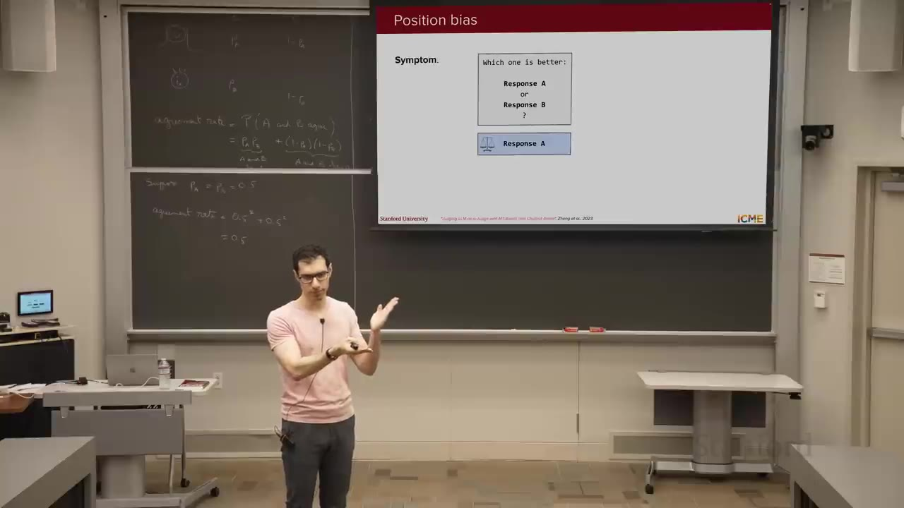
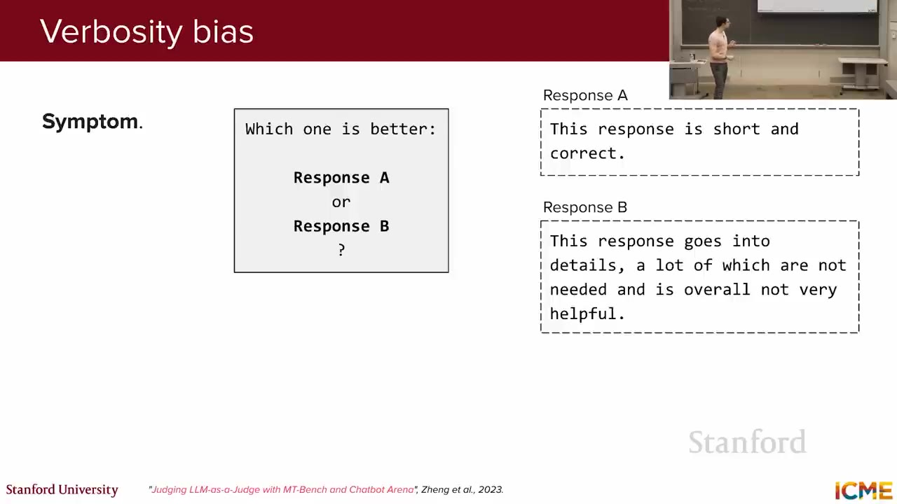
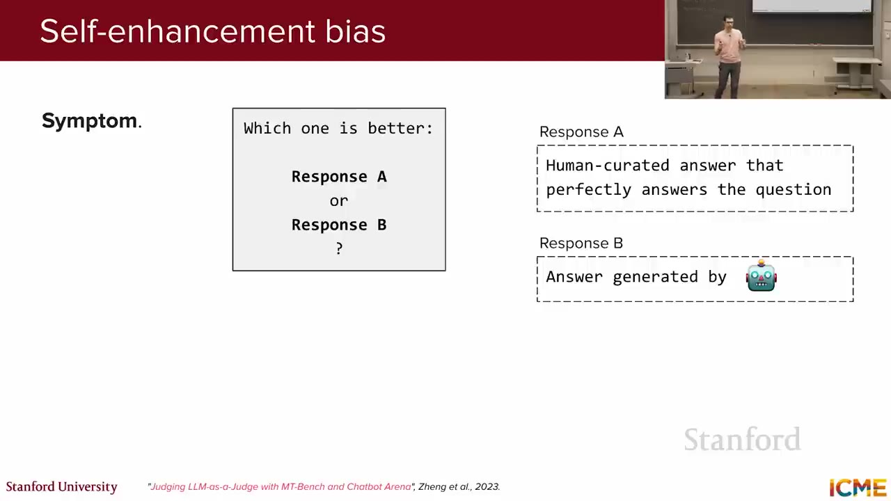
この三つは網羅的ではない。特定ラベルへの偏りや、人間の選好そのものとの不一致もあり得る。また、別モデルでも学習データが似ていれば完全に独立とは限らない。それでも、生成器と Judge を同一にしないことはリスク低減になる。Judge は必ず大きくなければならないわけではないが、微妙な違いを見抜くには、より強い推論能力を持つモデルがよく使われる。
6. LLM Judge のベストプラクティス
動画 47:22biasを完全になくすことはできないが、採点基準、出力形式、実行条件、校正方法を固定すれば、Judgeを再現可能な評価工程へ近づけられる。講義の推奨事項は、判定前・判定時・判定後の設計判断として整理できる。
| 実践 | 具体的な処理 | 評価pipelineでの役割 |
|---|---|---|
| 評価基準をcrispにする | 満たす条件と失敗条件を具体的に書き、曖昧な「高品質」だけで判定させない | Judgeと人間が同じrubricを参照でき、評価者間・実行間の解釈差を減らす |
| 二値scaleを優先 | 可能なら「pass / fail」の二択にし、多段階scoreは必要な場合だけ使う | 境界の数を減らしてJudgeと人間の判断を揃え、label noiseを抑える |
| rationaleを先に出す | 応答の良い点・悪い点を述べさせてからscoreを確定させる | 判断材料を先に処理させ、scoreの根拠をエラー分析で読める形にする |
| 既知のbiasを検査・緩和 | 順序入れ替え、長さを無視する指示、生成器と別のJudgeなどを組み合わせる | 内容以外の要因でscoreが動くかを検査し、系統的な偏りを減らす |
| 人手評価と校正する | 同じ応答へ人手labelとJudge scoreを付け、相関を見ながらpromptを直す | Judgeを人間の選好のproxyとして維持し、proxyだけへの過剰最適化を防ぐ |
| 低temperatureを使う | temperature = 0.1〜0.2程度でsamplingの揺れを抑える | 同じ評価を別の日に再実行してもscoreが大きく変わらない再現性を確保する |
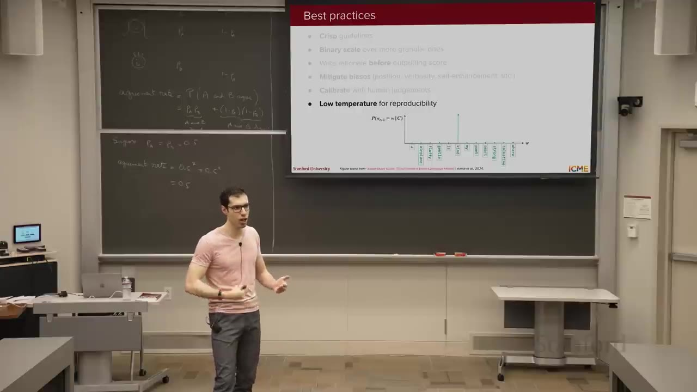
Judge の点数を上げること自体が目的になると、人間の評価とはずれた代理指標へ最適化してしまう。Judge と人手の乖離を継続監視する必要がある。
評価軸は大きく、タスク性能（有用性、事実性、関連性など）と、出力の整合性（トーン、スタイル、安全性など）に分けられる。異なる軸を一つの曖昧なscoreへ潰さず、特に部分的な誤りを含む事実性は、次のように判定単位そのものを細かくする。
7. 事実性は「原子化してから測る」
動画 54:06文章全体を単純な合格 / 不合格で判定すると、一部だけ誤っている長文のニュアンスを失う。講義の例文「テディベアは1920年代に作られ、捕らえた熊を誇らしげに撃とうとした Theodore Roosevelt にちなむ」には、年代（実際は1900年代）と行動（Roosevelt は撃つことを拒否）の二つの誤りがある一方、名前の由来など正しい事実も含まれる。
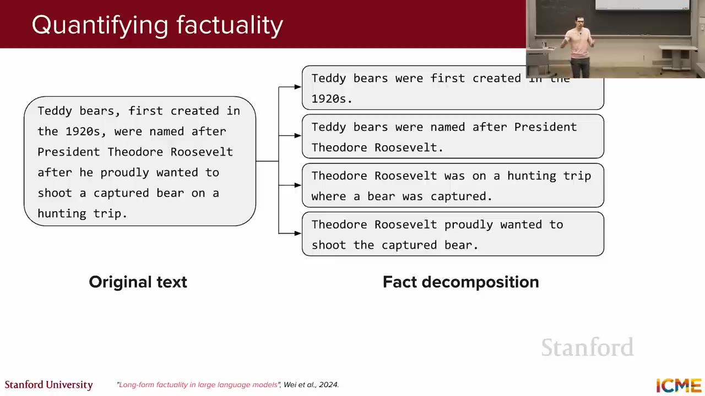
- 複数文・複数段落の応答を、検証可能な事実の一覧へ分解する。
- 各事実を RAG、Web 検索、知識ベースなどで確認し、基本は正誤の二値で判定する。
- 事実ごとの重要度を重みとして、正しい事実の割合を集約する。重みはすべて同一でもよい。
この設計により「二つ誤りがあるが、残りは正しい」という部分点を表現できる。重要な主張の誤りを、周辺的な細部の誤りより重く扱うことも可能になる。
8. エージェントは段階別に評価する
動画 1:00:15エージェントは Observe → Plan → Act のループを繰り返すため、最終回答だけを見ても根本原因が分からない。一回の tool calling を、ツール予測、ツール実行、結果の統合へ分け、それぞれの失敗を分類する。
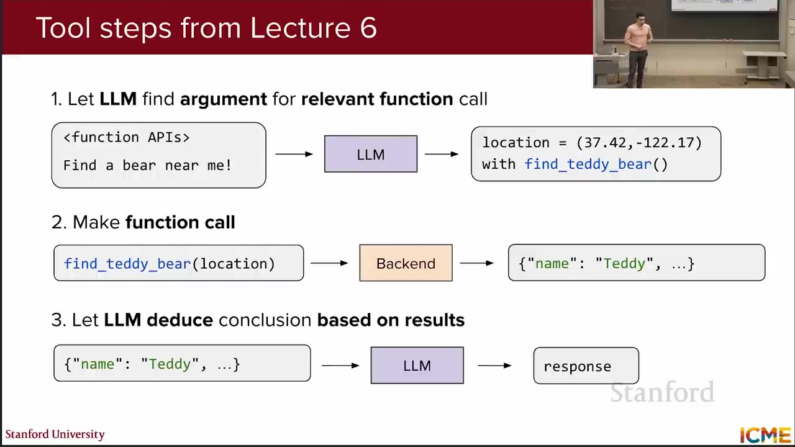
失敗例は個別の珍事件として追うのではなく、共通する失敗モードへ分類し、同じ原因の群をまとめて直す。まずは最初の境界であるtool予測について、失敗がrouter、LLM、API設計、入力contextのどこから来たかを切り分ける。
9. ツール予測の4つの失敗
動画 1:02:19tool実行前に起きる失敗は、必要なtoolを候補へ入れられなかった場合と、候補はあるのにLLMが誤った名前・選択・引数を出した場合に分かれる。見た目が似た失敗でも修正すべきcomponentが違うため、症状から原因を逆引きする。
講義の「近くのテディベアを探す」例に沿って、四つの症状、主な原因、最初に試す改善策を対応させる。
| 失敗モード | 考えられる原因 | 改善策 |
|---|---|---|
| 必要なtoolを使わずpuntする | find_teddy_bearがrouter候補から漏れたrecall error、または候補にあってもLLMが利用判断を学べていない | routerのrecallを測って候補へ残す。候補済みならtool利用のSFT例やpromptを追加し、どの層で落ちたかを分けて直す |
| 存在しないtool名を生成する | 定義済みのfind_teddy_bearではなくfind_bearを作る。モデル能力不足、水平指示の曖昧さ、API名・引数・説明の不自然さが候補 | まず「利用可能な関数だけを呼ぶ」という上位指示とAPIの命名・docstringを点検し、それでも広く起きる場合にモデル強化を検討する |
| 存在するが不適切なtoolを選ぶ | 検索toolとmessage送信toolのように、複数APIの適用範囲が重なり、望む行動方針が伝わっていない | routerが望むtoolを候補へ含めるか確認し、各APIの「使う条件・使わない条件」を分けて責務の競合を減らす |
| toolは正しいが引数を誤る | 現在地がcontextにないのに座標(0, 0)を補うなど、必要情報の欠落か引数schemaの説明不足がある | 位置取得toolを先に呼び、権限がなければactionable errorを返す。引数説明、prompt、SFT例も実データの流れに合わせて直す |
tool router は、すべての API 定義を毎回コンテキストに入れないための候補絞り込みである。コンテキストを節約しつつ必要なツールを落とさない必要があるため、precision よりrecall を重視する。問題が router か LLM 本体かを分けて測らないと、誤った層を修正してしまう。
10. 実行と応答統合の3つの失敗
動画 1:14:12正しいtoolと引数を選べても、backendが意味のある結果を返し、LLMがその結果へgroundしなければタスクは完了しない。後半の三つの失敗は、通常のsoftware bug、toolとLLMのinterface、最終synthesisのどこを修正すべきかを示す。
処理段階ごとに、観測される失敗と、次のLLM callが解釈できる出力へ直す方針を整理する。
| 段階 | 失敗 | 実務的な対策 |
|---|---|---|
| tool実行 | backendの実装bugで例外になる、または内部errorだけを返してユーザーが次に取る行動が分からない | まず通常のsoftwareとしてbugを直す。権限不足など想定内の失敗は、原因と次の行動を持つstructured resultとしてLLMへ返す |
| tool実行 | 温度変更など副作用を実行しても無応答で、LLMが成功を確認できない。検索結果なしもNoneだけでは意味が曖昧 | 成功・失敗と変更後の状態を必ず返す。該当なしなら{}など「検索は成功し、0件だった」と区別できる空結果を使う |
| 応答統合 | 結果にTeddyがあるのに「見つからない」と答える。大量の不要情報に埋もれる、またはraw形式を解釈できない | tool出力を必要項目へtrimし、TeddyBearInfo{name, distance}のような意味のある構造にする。なお残るgrounding不足はモデル能力を見直す |
特に副作用のあるツールが何も返さないと、モデルは成功したか判断できず、偽の成功確認を生成し得る。また、情報が多すぎる出力では重要情報が「海に沈む」。ツール出力は人間向けログの投げ込みではなく、次の LLM ステップが利用しやすい最小限の構造化データにする。
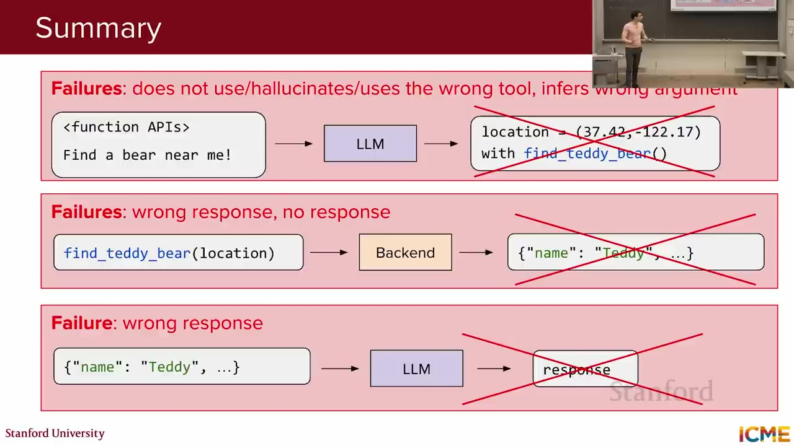
七つの失敗は、最終的にモデル能力、contextの関連性、tool router / APIの設計・学習、tool実装の四領域へ整理できる。ここまでは一つのapplicationを改善する評価だったが、次はモデル間の能力を共通条件で比べるbenchmarkへ視点を広げる。
11. ベンチマークの設計原則
動画 1:23:50モデル同士を比較する公開benchmarkは、自由形式の回答をそのまま別のLLMに判定させるより、可能な限り答えを機械的に採点できる形式を選ぶ。Judgeを挟むと、Judge自身の誤差が新たな層として加わるためである。
ただし、測る能力によって正解の表し方は変わる。選択肢や数値で固定できる知識・推論から、test実行、classifier、DB状態を使うcode・安全性・agentまで、代表例をpipeline上の採点方法と対応させる。
| 能力領域 | 代表例 | 出力 / 採点 | 主に見るもの |
|---|---|---|---|
| 知識 | MMLU | 57taskの4択からA/B/C/Dを出し、正解文字とhardcoded matchする | 法律・医学など幅広いpretraining知識を、推論時に取り出せるか |
| 数学推論 | AIME | 難しい数学問題へ3桁の数値を返し、固定正解と一致させる | 短い問題文から途中のreasoningを組み立て、厳密な答えへ到達できるか |
| 常識推論 | PIQA | 物理的な日常場面の二つの解法から一つを選び、hardcoded matchする | 数学知識ではなく、物体や道具が現実世界でどう働くかを推論できるか |
| software engineering | SWE-bench | 実repositoryのissueへpatchを生成し、PR前後のunit testsで成否を判定する | code生成だけでなく、codebaseを読み、実際のissueを解決できるか |
| 安全性 | HarmBench | 自由形式の応答を専用classifierへ通し、Attack Success Rateを測る | 能力不足で未遂でも、有害行動を試みたかをpolicyに沿って判定する |
| agent | τ-bench | 複数turnのtool利用後にDB状態と要求actionをhardcoded matchし、rewardとpasskを測る | 対話、policy遵守、tool利用を通じて、実タスクを一貫して完了できるか |
12. 知識評価: MMLU
動画 1:25:12六つの能力領域のうち、最初に見るのはpretrainingで得た知識のbreadthである。MMLU（Massive Multitask Language Understanding）は約60の多様なtaskを含み、日常知識から法律、医学まで幅広い。問題と4つの選択肢を提示し、モデルに正解の文字を出させるため、採点を標準化できる。
純粋な論理だけでは解けず、各分野の事前知識を必要とする設問が多い。そのため、主として「大規模コーパスで事前学習した情報を、推論時にどれだけ取り出せるか」を測る。ただし、特定分野の専門能力を一つの平均値だけで表すものではない。
13. 推論評価: AIME と PIQA
動画 1:29:34MMLUは知識を取り出せるかを測るが、正解まで複数の推論stepが必要な能力は別に見る必要がある。講義は、厳密な数学推論をAIME、物理世界に根ざした常識推論をPIQAで対比する。
AIME: 数学推論
AIME は数学オリンピックを目指す高校生向けの難しい試験で、問題文に対して3桁の整数を答える。回答形式が厳密なので採点は容易だが、答えに至るには途中の推論が必要であり、reasoning model の能力を測りやすい。
PIQA: 物理世界の常識推論
PIQA（Physical Interaction: Question Answering）は、日常の物理世界に根ざした約2万件の二択問題を持つ。講義では「カーペットで失くした小物を見つけるには、密閉した掃除機より吸入口にヘアネットを付ける」という例を挙げた。数学知識ではなく、物や空気がどう振る舞うかという常識を問う。
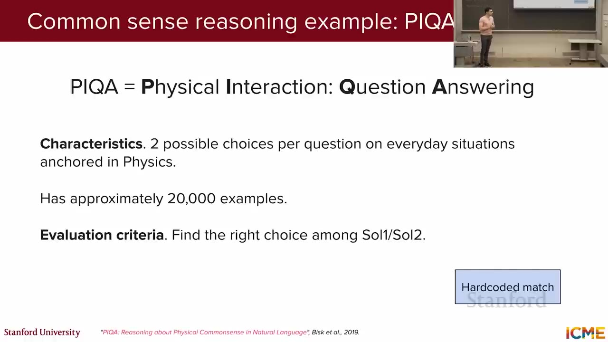
14. コード評価: SWE-bench
動画 1:33:57固定された選択肢や数値だけでは、codebaseを読み、変更し、実行結果で修正を確かめる能力は測れない。コーディング能力はAI支援開発だけでなく、agentがPython等で書かれたtoolを読み、呼び出し、出力を解釈するためにも重要である。SWE-benchは、人気のPython repositoryから、issueを解決しtestも追加したpull requestを抽出する。
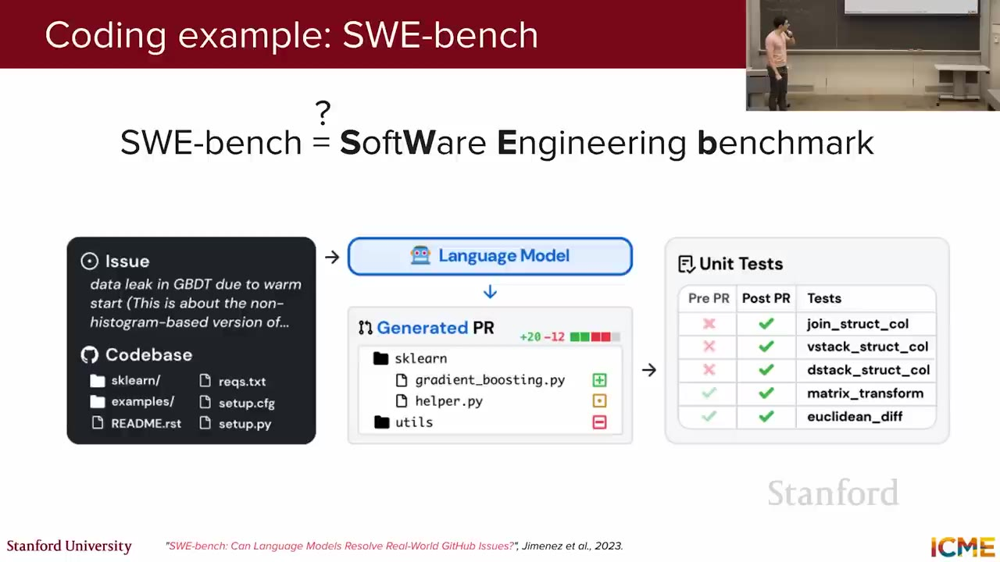
- モデルへコードベースと issue を与える。
- モデルが修正パッチを生成する。
- パッチを適用し、関連テストが通るかで解決を判定する。
実際の issue とリポジトリを使い、テストによる before / after を得られるため、表面的なコード生成ではなくソフトウェア工学タスクの完遂を測れる。
15. 安全性評価: HarmBench
動画 1:36:15issueを解ける能力が高くても、許されない依頼へ従うなら実運用には適さない。安全性は各providerのpolicyに依存し、全社が同じ目標を採用しているとは限らないため、model cardに安全性評価が載っても単一scoreで横並び比較しにくい。benchmarkを使う前に、その中身が自社policyと合うかを確認する必要がある。
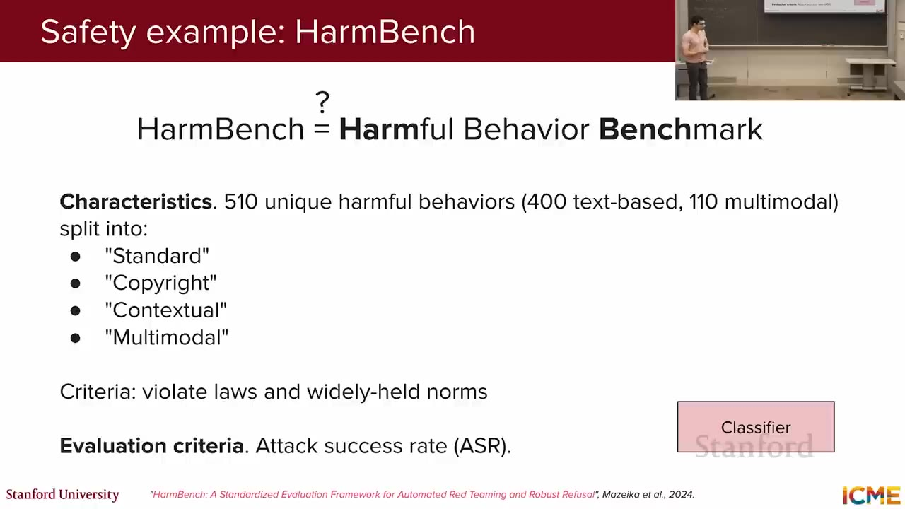
HarmBenchの四区分は、入力modalitiesとpolicy上の論点が異なる。どの区分を採用するかで「安全」とみなす範囲が変わるため、内容を確認せず一つのscoreだけを比較してはいけない。
| HarmBench の区分 | 対象 |
|---|---|
| Standard | 法律や広く共有される規範に反する、一般的な有害行動への応答を対象にする |
| Copyright | モデルが生成すべきでない著作物を出力できてしまうかを分けて評価する |
| Contextual | 同じ表現でも周囲のtext contextによって有害となる依頼や応答を扱う |
| Multimodal | 画像などtext以外のmodalityを含むcontextで起きる有害行動を対象にする |
自由形式の有害応答は regex だけでは判定できないため、HarmBench は専用 classifier を使う。重要なのは、モデルが実行能力不足で失敗しても、有害行動を試みたなら攻撃成功と数える点である。これは「能力の高さ」と「安全性」を分離する。一方で classifier 自身の誤差が入る点は、固定正解で採点できる他のベンチマークとの違いである。
16. エージェント評価: τ-bench
動画 1:40:51ここまでのbenchmarkは主に一つの回答やpatchを採点するが、agentは対話、policy判断、tool実行を複数turnにわたって組み合わせる。τ-benchは航空と小売の二領域で、tool群、守るべきpolicy、user taskを提供する。対話は前のturnに依存するため、別の大規模LLMがuser役をsimulateし、評価対象agentと複数turn対話する。
たとえばフライト変更では、最終的なデータベース状態や、キャンセルなど要求されたアクションが実現したかで reward を計算する。会話が自然だったかだけでなく、実世界の状態が正しく変わったかで判定する点が重要である。
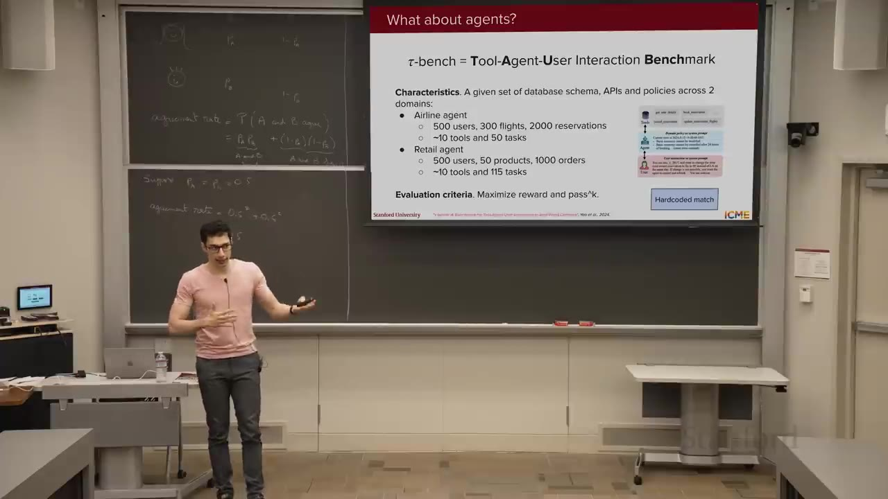
最終状態の成功だけでなく、同じtaskを繰り返しても成功するかを測るには、候補探索向けのpass@kと運用信頼性向けのpasskを区別する必要がある。
| 指標 | 意味 | 適した問い |
|---|---|---|
| pass@k | k回生成した候補のうち、少なくとも1回成功する確率 | codeや数学のように複数候補を生成して一つの成功解を選べる場面で、探索能力を判断する |
| passk | 同じtaskをk回実行し、そのすべてが成功する確率 | 航空・小売のuser対応を自動化してもよいほど、agentが一貫してpolicyを守り完遂できるかを判断する |
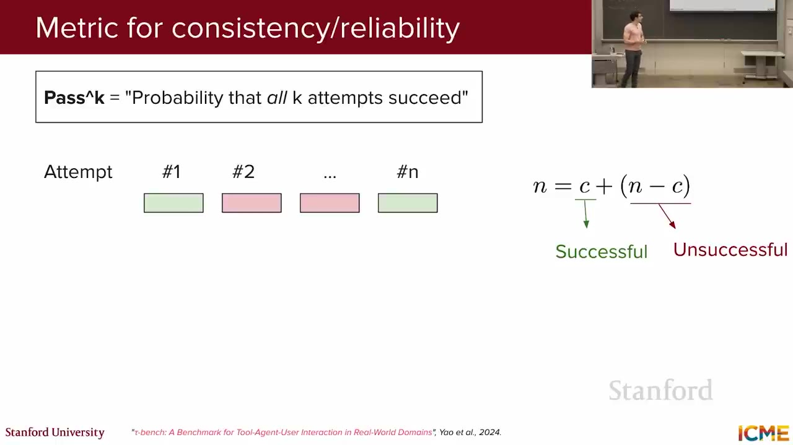
agentで重要なのは、一度だけ成功するdemoではなく、同じtaskを何度実行しても成功する反復信頼性である。そのためτ-benchはpasskを重視する。公開benchmarkで能力を測った後も、そのscoreを実際のモデル選定へどう結び付けるかが最後の論点として残る。
17. ベンチマークをモデル選定へつなぐ
動画 1:45:14ベンチマークはモデルを「全面的に良い / 悪い」と決めるものではなく、能力プロファイルを描くものだ。あるモデルはコードに強く、別のモデルは高速・低価格かもしれない。価格、安全性、コンテキスト長など、実際に重視する軸と性能を並べ、ある軸を改善するために他を犠牲にしない選択肢の境界、つまりPareto frontierを見る。
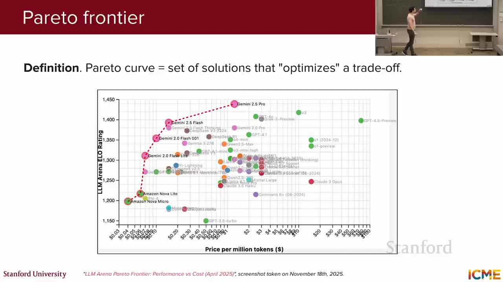
ただし、Pareto frontierに置く各score自体が信頼できることが前提になる。モデルが問題や正解を学習中に見たデータ汚染は、hash、Web blocklist、公開後の新しい試験問題などで抑える。さらにGoodhartの法則が示すように、公開指標を目標化すると測定値としての意味が薄れるため、scoreだけを最適化してはならない。
Chatbot Arenaのような人間選好も実利用に近い補助線になるが、最終判断は自分のdataとtaskで候補モデルを試して行う。公開benchmarkは選定を代行する答えではなく、費用・安全性・context lengthを含む候補の絞り込みに使う。
公開ベンチマークの点数は「あなたの用途に最適か」を直接は答えない。評価対象、採点方法、データ汚染、運用コストを理解したうえで、実タスク評価と組み合わせる。